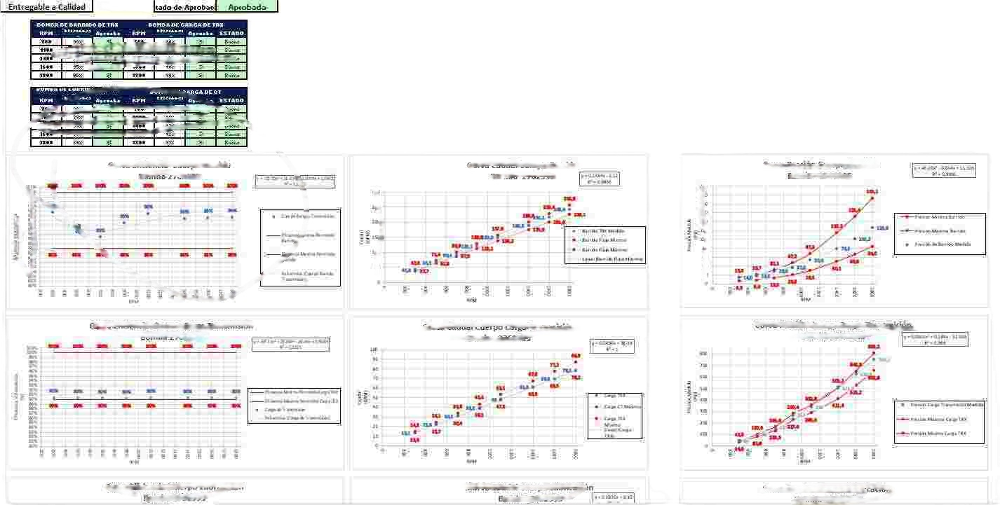

Data Analysis
Machine Learning
Minería
Caracterización de componentes mineros
Desarrollo de modelos de regresión y análisis técnico para transformar datos de operación en veredictos utilizables por el negocio, disminuyendo subjetividad y apoyando decisiones.
- Procesamiento y limpieza de datos históricos
- Modelos de regresión para curvas de rendimiento
- Mejora operacional reportada de hasta 85%